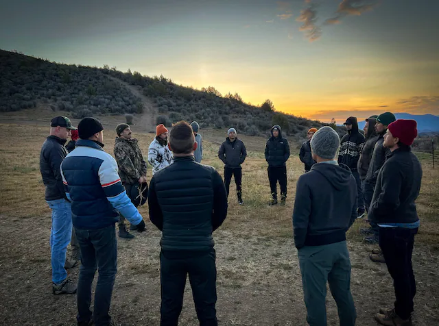

B932 · 6 Essentials to an Empowered Men's Circle
Hi {first_name},
Men's circles are on the rise, and I today wanted to share the concept of a quality men's circle with you—a space where a tight group of men come together to share genuine feedback, support, vulnerability, and transformation, creating a profound impact on our lives.
 Here are key essentials that make a men's circle invaluable:
In an attempt to do my part to grow men's work and create more quality men's circles in the world, I am excited to introduce my newest program, The Path to Inspired Action: Empowering the Authentic Man Within. This small, 12-person group experience is meticulously crafted to embody these essentials and more. The program offers a transformative journey, fostering deep connections, lasting change, and empowering you to take inspired action in areas of your life that can change everything.
To learn more about securing your spot in this limited group online circle and program, click the link here.
Spaces are limited, as I am capping the group at 12 men. Take action now to elevate your experience and embrace the power of a quality men's circle in The Path to Inspired Action!
To your growth and empowerment, Mike |